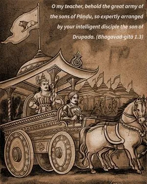
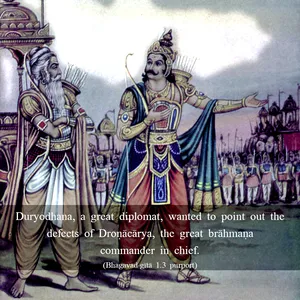
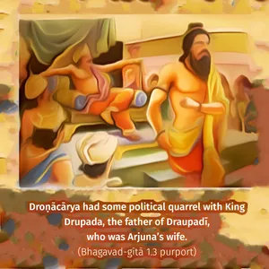
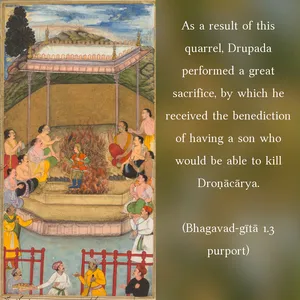

O my teacher, behold the great army of the sons of Pāṇḍu, so expertly arranged by your intelligent disciple the son of Drupada.




Duryodhana, a great diplomat, wanted to point out the defects of Droṇācārya, the great brāhmaṇa commander in chief. Droṇācārya had some political quarrel with King Drupada, the father of Draupadī, who was Arjuna’s wife. As a result of this quarrel, Drupada performed a great sacrifice, by which he received the benediction of having a son who would be able to kill Droṇācārya. Droṇācārya knew this perfectly well, and yet as a liberal brāhmaṇa he did not hesitate to impart all his military secrets when the son of Drupada, Dhṛṣṭadyumna, was entrusted to him for military education. Now, on the Battlefield of Kurukṣetra, Dhṛṣṭadyumna took the side of the Pāṇḍavas, and it was he who arranged for their military phalanx, after having learned the art from Droṇācārya. Duryodhana pointed out this mistake of Droṇācārya’s so that he might be alert and uncompromising in the fighting. By this he wanted to point out also that he should not be similarly lenient in battle against the Pāṇḍavas, who were also Droṇācārya’s affectionate students. Arjuna, especially, was his most affectionate and brilliant student. Duryodhana also warned that such leniency in the fight would lead to defeat.